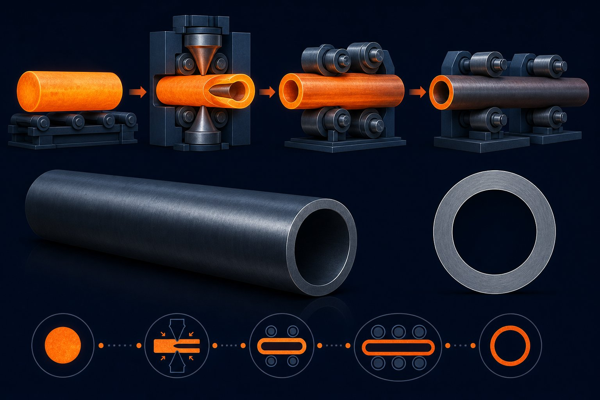

لوله مانیسمان چیست و چرا اهمیت دارد؟
لوله بدون درز از بیلت جامد فولادی و بدون هیچگونه جوشکاری طولی تولید میشود. نتیجه، ساختاری یکپارچه با خواص یکنواخت در سراسر محیط لوله است. در سرویسهای پرفشار، دمای بالا یا سیالات حساس، نبود درز جوش یک مزیت ذاتی محسوب میشود؛ زیرا درز جوش همواره یک ناحیه با ریزساختار متفاوت و نیازمند بازرسی ویژه است.

فرآیندهای تولید
- نورد مورب (سوراخکاری): بیلت گرم با سنبه مرکزی سوراخ و به پوسته توخالی تبدیل میشود؛ رایجترین روش.
- نورد با سنبه متحرک: پوسته توخالی روی سنبه بلند نورد و ضخامت و قطر آن کنترل میشود.
- اکستروژن: برای آلیاژهای دیرکار و سایزهای خاص با فشار هیدرولیک بالا.
- کشش سرد: برای دقت ابعادی بالا، سطح بهتر و خواص مکانیکی دقیقتر در سایزهای کوچک.
- پس از شکلدهی، عملیات حرارتی مناسب (نرمالایز یا کوئنچ-تمپر بسته به گرید) انجام و تستهای نهایی اعمال میشود.
استانداردهای رایج
| استاندارد | کاربرد | توضیح |
|---|---|---|
| لوله کربنی بدون درز برای دمای بالا | خطوط فرایندی و بخار | پرکاربردترین گرید کربنی |
| لوله کربنی برای کاربری عمومی | خطوط عمومی و تاسیسات | اقتصادیترین انتخاب |
| لوله آلیاژی بدون درز | دمای بالا و فشار قوی | گریدهای کروم-مولیبدن |
| لوله کربنی دمای پایین | سرویسهای زیر صفر | با تست ضربه |
| لوله خط انتقال بدون درز | خطوط انتقال نفت و گاز | با گریدهای مختلف |
| لوله استنلس بدون درز | سرویس خورنده | گریدهای استنلس رایج |
انتخاب استاندارد باید با دمای طراحی، فشار و ماهیت سیال هماهنگ باشد.
مقایسه با لوله درزدار
| معیار | بدون درز | درزدار |
|---|---|---|
| یکنواختی خواص | کامل در سراسر محیط | محدود به ناحیه درز و فلز جوش |
| تحمل فشار | بالاتر در ضخامت مشابه | وابسته به کیفیت بازرسی درز |
| محدوده سایز | معمولاً تا ۲۴ اینچ | تا قطرهای بسیار بزرگ |
| هزینه | بالاتر در قطرهای بزرگ | اقتصادیتر در قطرهای بزرگ |
| زمان تحویل | معمولاً طولانیتر | معمولاً کوتاهتر |
برای سرویسهای حساس و فشار بالا، بدون درز انتخاب مطمئنتر است؛ برای قطرهای بزرگ عمومی، درزدار با بازرسی کامل توجیه دارد.
تستها و بازرسیهای رایج
- تست هیدرواستاتیک هر شاخه مطابق فرمول استاندارد مربوطه.
- تست غیرمخرب (التراسونیک یا جریان گردابی) برای صحت بدنه.
- تست تختشدن یا فلنجشدن برای ارزیابی انعطاف.
- کنترل ابعاد، ضخامت، بیضوی و صافی.
- بازرسی چشمی سطح و بررسی عیوب نوردی.
چکلیست استعلام خرید
- سایز اسمی و اسچول یا ضخامت دقیق دیواره.
- استاندارد ساخت و گرید.
- طول شاخه (تصادفی یا دوبرابر تصادفی).
- نوع انتها (پخدار یا ساده) و زاویه پخ.
- گواهی مواد نوع ۳٫۱ و شماره ذوب.
- در سرویسهای خاص: دمای طراحی، الزام تست ضربه یا محدودیت سختی.
جمعبندی
لوله مانیسمان ستون فقرات خطوط پرفشار و حساس است. با مشخص کردن دقیق استاندارد، گرید، ابعاد و مدارک، خریدی مطمئن و قابل دفاع در بازرسی خواهید داشت.
سوالات رایج
چرا به لوله بدون درز «مانیسمان» گفته میشود؟
این اصطلاح از نام یک شرکت سازنده اروپایی گرفته شده که فرآیند نورد مورب را توسعه داد و در بازار ایران به نام عمومی لوله بدون درز تبدیل شده است. در مدارک رسمی باید از عنوان لوله بدون درز استفاده شود.
مزیت اصلی لوله بدون درز چیست؟
نبود درز جوش یعنی یکنواختی کامل خواص در محیط لوله و حذف نقطه ضعف احتمالی درز. این ویژگی تحمل فشار بالاتر، قابلیت اطمینان بیشتر در سرویسهای حساس و سهولت بازرسی را به همراه دارد.
بزرگترین سایز لوله بدون درز چقدر است؟
با فرآیندهای رایج نورد مورب معمولاً تا حدود ۲۴ اینچ و در فرآیندهای خاص بزرگتر نیز تولید میشود؛ برای قطرهای بزرگتر معمولاً از لوله درزجوش بازرسیشده استفاده میشود.
آیا لوله بدون درز همیشه گرانتر است؟
در سایزهای کوچک و ضخامتهای سنگین تفاوت قیمت کمتر است و با توجه به حذف ریسک درز، توجیه اقتصادی دارد؛ در قطرهای بزرگ، لوله درزجوش معمولاً اقتصادیتر است.
مطالب مرتبط
- مقایسه لوله بدون درز و درزدار
- اسچول لوله و ضخامت دیواره
- استاندارد ابعاد لوله کربنی (ASME B36.10M)
- راهنمای لوله کربنی دمای بالا
- راهنمای لولههای جوشی و بازرسی درز جوش
برای استعلام لوله مانیسمان، سایز، اسچول یا ضخامت، استاندارد ساخت، طول شاخه و گواهی مواد را مشخص کنید. در سرویسهای خاص (دمای بالا، دمای پایین یا ترش) شرایط سرویس را ذکر کنید تا گرید مناسب پیشنهاد شود.
مشاهده صفحه محصول ← ثبت RFQ همین محصولتامین این تجهیزات را به پیشرو تجهیز فرتاک بسپارید
شرکت پیشرو تجهیز فرتاک تامینکننده تخصصی تجهیزات صنعتی برای پروژههای نفت، گاز، پتروشیمی، فولاد و نیروگاهی است. برای دریافت پیشنهاد فنی و قیمت، استعلام (RFQ) خود را ثبت کنید تا کارشناسان مهندسی فروش در کوتاهترین زمان پاسخ دهند.
- تامین لوله مانیسمانلوله بدون درز کربنی و آلیاژی با گواهی مواد
- تامین تجهیزات پایپینگفلنج، اتصالات و شیرآلات مطابق مدارک پروژه